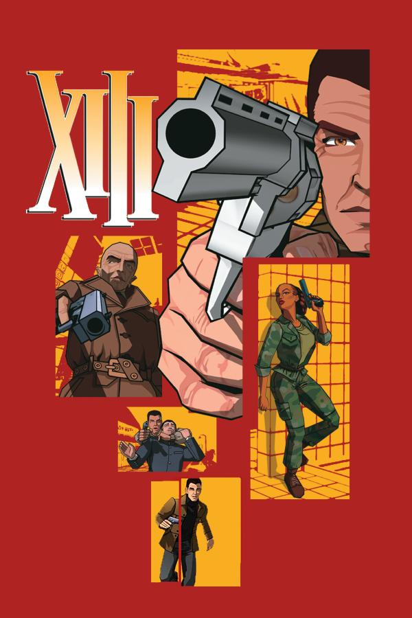

A gripping Belgian graphic novel series about a man suffering from amnesia, marked with the Roman numeral "XIII," as he uncovers a dark political conspiracy while searching for his true identity, with XIII being the only things he knows while being chased by agents, assassins and more.
Characteristics: Action-Packed Plot, Suspence, Political and Action Vocab & References, Visual Support
Skills Improved: Reading, Cultural Awareness